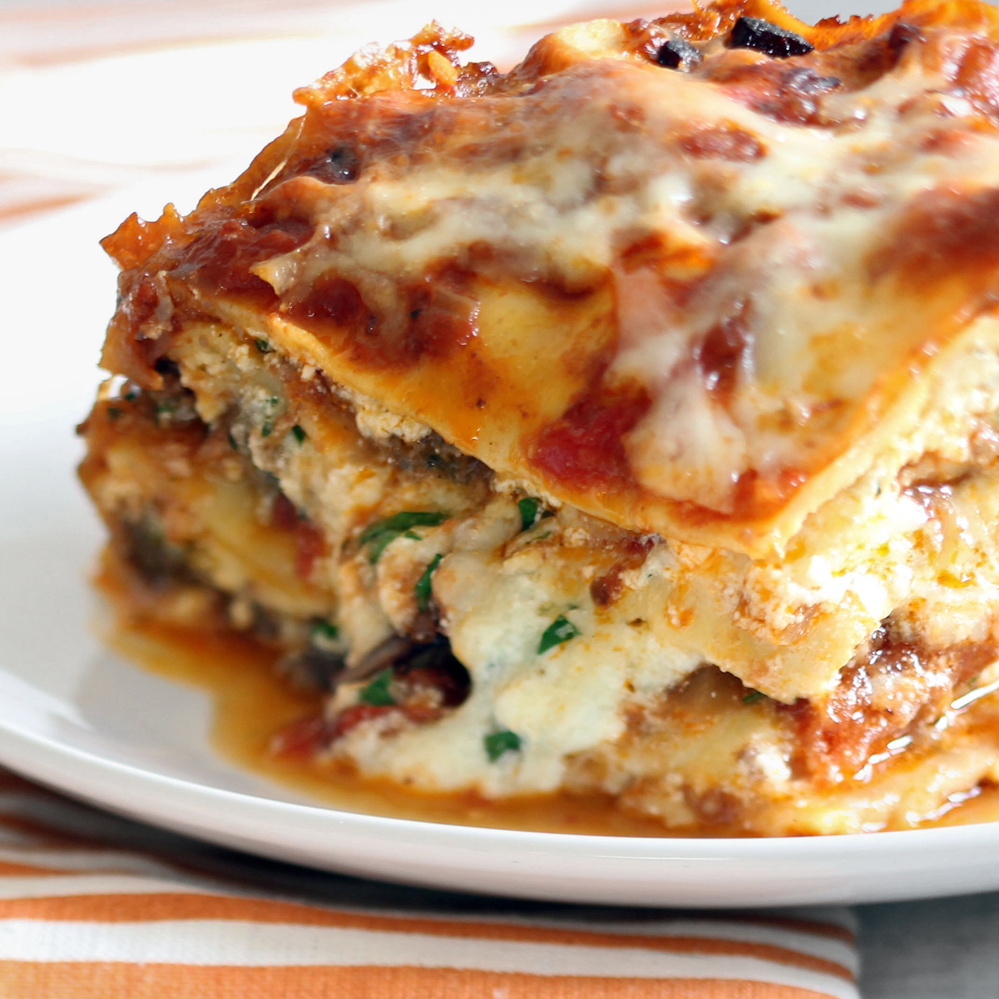

Cheap and Easy Recipe!
This awesome lasagna is not only delicious but only 5 dollars. The food is so delicious that even lactose intolerance people will be able to eat this cheese without being hurt.
Lasagna
Ingredients
- 50ml of cheese
- 2 scoops of tomato sauce
- Lean beef
Steps
- Pour 300ml of milk into the bucket
- Freeze the milk overnight
- Mix the frozen milk with cheese until thick consistency
- Mix the tomato sauce with the concoction
- Fry the beaf with the liquid
- Yay we are done
Hi